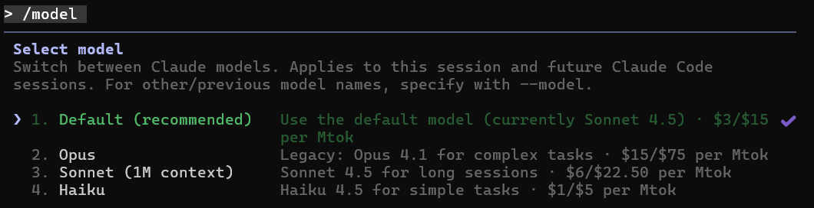
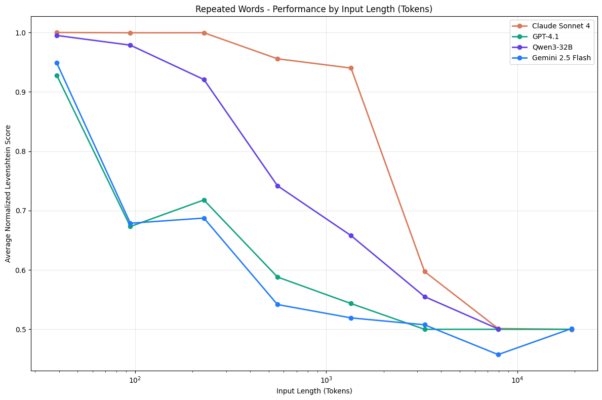

# Agentic Coding The Basics Notes: zubi
# <span style="background-color:#ff6f00">Claude Code</span>
### Claude Code - <span style="background-color:#ff6f00">Terminal vs GUI</span> - Command line <!-- .element: class="fragment" --> - Native VSCode GUI extension <!-- .element: class="fragment" --> - Native JetBrains extension (beta) <!-- .element: class="fragment" --> to update: <pre><code data-trim data-noescape>npm update -g @anthropic-ai/claude-code</code> Notes: domi
### Claude Code - <span style="background-color:#ff6f00">Settings</span> - .claude/settings.json <!-- .element: class="fragment" --> - .claude/settings.local.json <!-- .element: class="fragment" --> - ~/.claude/settings.json <!-- .element: class="fragment" --> [Settings Documentation](https://docs.claude.com/en/docs/claude-code/settings) <!-- .element: class="fragment" --> Notes: domi
### Claude Code - <span style="background-color:#ff6f00">Models</span>  - /model <!-- .element: class="fragment" --> - Sonett <!-- .element: class="fragment" --> - To code <!-- .element: class="fragment" --> - 200k vs 1m tokens <!-- .element: class="fragment" --> - Opus <!-- .element: class="fragment" --> - To plan - default in plan mode <!-- .element: class="fragment" --> - More expensive and slower <!-- .element: class="fragment" --> - Haiku <!-- .element: class="fragment" --> - Modes: <!-- .element: class="fragment" --> - Tab key <!-- .element: class="fragment" --> - Thinking/normal <!-- .element: class="fragment" --> Notes: domi
### Claude Code - <span style="background-color:#ff6f00">Commands</span> - Where to put them <!-- .element: class="fragment" --> - Parameterization <!-- .element: class="fragment" --> - /my-command <!-- .element: class="fragment" --> Notes: domi
### Claude Code - <span style="background-color:#ff6f00">Subagents</span> - /agents <!-- .element: class="fragment" --> - Orchestrated by main agent <!-- .element: class="fragment" --> - Isolated from main context <!-- .element: class="fragment" --> - Example: <!-- .element: class="fragment" --> - Gather requirements where you can use Context7 <!-- .element: class="fragment" --> - Commit message subagent to make commits <!-- .element: class="fragment" --> Notes: domi
### Claude Code - <span style="background-color:#ff6f00">Hooks</span> - Enforce test, linter, etc execution with 100% pass <!-- .element: class="fragment" --> - Prevent editing what's locked, ie integration tests <!-- .element: class="fragment" --> - Trigger notification <!-- .element: class="fragment" --> Notes: domi
### Claude Code - <span style="background-color:#ff6f00">Tool usage</span> - Bash commands <!-- .element: class="fragment" --> - MCP Servers <!-- .element: class="fragment" --> - claude mcp add --transport http sentry https://mcp.sentry.dev/mcp <!-- .element: class="fragment" --> - Manually edit .claude/.mcp.json <!-- .element: class="fragment" --> Notes: domi
### Claude Code - <span style="background-color:#ff6f00">Permission rules</span> - /permission <!-- .element: class="fragment" --> - Manually edit .claude/settings.json <!-- .element: class="fragment" --> Notes: domi
# <span style="background-color:#ff9800">Prompting</span> <em>"the more specific you are, the better results you get"</em> Notes: zubi
### Prompting - <span style="background-color:#ff9800">Hallucinations</span> - AI fills holes creatively <!-- .element: class="fragment" --> - Important parts must be covered in context <!-- .element: class="fragment" --> - rules - examples - specifications - etc. Notes: zubi
### Prompting - <span style="background-color:#ff9800">Action + Location + Detail</span> - Action: <!-- .element: class="fragment" --> - What to do <!-- .element: class="fragment" --> - Location: <!-- .element: class="fragment" --> - Where to do it <!-- .element: class="fragment" --> - Detail: <!-- .element: class="fragment" --> - How to do it <!-- .element: class="fragment" --> - Information Dense Keywords <!-- .element: class="fragment" --> - Create <!-- .element: class="fragment" --> - Update <!-- .element: class="fragment" --> - Mirror <!-- .element: class="fragment" --> - Search <!-- .element: class="fragment" --> Notes: domi
### Prompting - <span style="background-color:#ff9800">Provide Examples</span> - Existing tests <!-- .element: class="fragment" --> - Expected transformation from → to <!-- .element: class="fragment" --> - Sample file syntax... <!-- .element: class="fragment" --> Notes: domi
### Prompting - <span style="background-color:#ff9800">Define Output Format</span> - Defined syntax (ie. json/yaml/etc.) <!-- .element: class="fragment" --> - Enforce with validation (ie. hooks) <!-- .element: class="fragment" --> Notes: domi
### Prompting - <span style="background-color:#ff9800">Further techniques</span> - Define edge cases <!-- .element: class="fragment" --> - Ask the agent to improve your prompt <!-- .element: class="fragment" --> - Prompt to ask questions to clarify before implement <!-- .element: class="fragment" --> - Generate script for repetitive or wide-spread tasks <!-- .element: class="fragment" --> - Deep research in ChatGPT <!-- .element: class="fragment" --> - Keywords: think, think hard, think harder, ultrathink <!-- .element: class="fragment" --> Notes: domi
# <span style="background-color:#ff6b35">Context Engineering</span> <em>"models are not mind-readers"</em> Notes: zubi
### Context Engineering - <span style="background-color:#ff6b35">Good Context</span> - Small <!-- .element: class="fragment" --> - Contains only what's in scope <!-- .element: class="fragment" --> - Keep track of context usage <!-- .element: class="fragment" --> - CLI tool or GUI <!-- .element: class="fragment" --> <br/><img height="200" src="context-cli.gif" alt="Context Demo" > - /context <!-- .element: class="fragment" --> Notes: zubi
### Context Engineering - <span style="background-color:#ff6b35">Context Management</span> - Resuming previous <!-- .element: class="fragment" --> - /resume <!-- .element: class="fragment" --> - Compacting <!-- .element: class="fragment" --> - /compact <!-- .element: class="fragment" --> - What it does <!-- .element: class="fragment" --> - Avoid it <!-- .element: class="fragment" --> - Clearing / Starting new <!-- .element: class="fragment" --> - /clear or start new claude <!-- .element: class="fragment" --> - When to create new context <!-- .element: class="fragment" --> Notes: zubi
### Context Engineering - <span style="background-color:#ff6b35">Context length</span> - Lost in the Middle <!-- .element: class="fragment" --> - Context rot <!-- .element: class="fragment" --> <br/>[]([rot](https://research.trychroma.com/context-rot) Notes: zubi
### Context Engineering - <span style="background-color:#ff6b35">Memory</span> - CLAUDE.md <!-- .element: class="fragment" --> - Coding standards & rules <!-- .element: class="fragment" --> - Core files and utility functions <!-- .element: class="fragment" --> - Building & Testing instructions <!-- .element: class="fragment" --> - Common bash commands <!-- .element: class="fragment" --> - Repository etiquette (e.g., branch naming, merge vs. rebase, etc.) <!-- .element: class="fragment" --> - API References and dependency documentation links <!-- .element: class="fragment" --> - Add CLAUDE.md to important subfolders also <!-- .element: class="fragment" --> Notes: zubi
### Context Engineering - <span style="background-color:#ff6b35">Files and extra folders</span> - @filename.[xyz] <!-- .element: class="fragment" --> - /add-dir <!-- .element: class="fragment" --> Notes: zubi
### Context Engineering - <span style="background-color:#ff6b35">Do NOT touch it</span> - Let AI fix the issue <!-- .element: class="fragment" --> - Let AI execute the bash script it wrote <!-- .element: class="fragment" --> - If you really need to touch it: <!-- .element: class="fragment" --> - Notify the model about the changes<br/>(ie link files) and reasons Notes: zubi
### Context Engineering - <span style="background-color:#ff6b35"><span style="text-decoration: underline;">R</span>etrieve <span style="text-decoration: underline;">A</span>ugment <span style="text-decoration: underline;">G</span>enerate</span> - File based <!-- .element: class="fragment" --> - MCP servers - later <!-- .element: class="fragment" --> - Vector database based <!-- .element: class="fragment" --> Notes: zubi
# <span style="background-color:#ff1744">Workflow</span> <em>"alias simulating our way of working"</em> Notes: zubi
### Workflow - <span style="background-color:#ff1744">Plan</span> - Iterative planning in markdown <!-- .element: class="fragment" --> - Involve AI in plan generation <!-- .element: class="fragment" --> - Request to clarify questions (multiple iterations) <!-- .element: class="fragment" --> - Define <!-- .element: class="fragment" --> - Goal of the task(s) <!-- .element: class="fragment" --> - Functional requirements <!-- .element: class="fragment" --> - Technical requirements <!-- .element: class="fragment" --> - Context <!-- .element: class="fragment" --> - Dependency references <!-- .element: class="fragment" --> - Human review <!-- .element: class="fragment" --> Notes: zubi
### Workflow - <span style="background-color:#ff1744">Task list</span> - Involve AI in task breakdown in markdown <!-- .element: class="fragment" --> - Step-by-Step implementation plan <!-- .element: class="fragment" --> - Explicit tasks <!-- .element: class="fragment" --> - Built in vs markdown based <!-- .element: class="fragment" --> - Reasonable, demoable size for each task <!-- .element: class="fragment" --> - Execution order <!-- .element: class="fragment" --> - Human review <!-- .element: class="fragment" --> Notes: zubi
### Workflow - <span style="background-color:#ff1744">Execute</span> - One task at a time <!-- .element: class="fragment" --> - Separate context when possible <!-- .element: class="fragment" --> - TDD or write tests and code together <!-- .element: class="fragment" --> Notes: zubi
### Workflow - <span style="background-color:#ff1744">Validation</span> - Reflection <!-- .element: class="fragment" --> - test runs, linters, type check, build result <!-- .element: class="fragment" --> - static analysis, screenshots, error logs, diffs <!-- .element: class="fragment" --> - HTTP response code, performance metrics, schema, JSON validation - Ask for a Demo <!-- .element: class="fragment" --> - Self-evaluated demos are the best <!-- .element: class="fragment" --> - Quick human evaluation <!-- .element: class="fragment" --> - Hooks - later <!-- .element: class="fragment" --> - Ask to double checks the implementation <!-- .element: class="fragment" --> Notes: zubi
### Workflow - <span style="background-color:#ff1744">Code Review</span> - Automatic review <!-- .element: class="fragment" --> - /prompt-collection:code-review <!-- .element: class="fragment" --> - /review - only for Github <!-- .element: class="fragment" --> - Human review <!-- .element: class="fragment" --> - 🔴 Never trust AI generated code in production <!-- .element: class="fragment" --> - 🔴 Read and understand every line it produces <!-- .element: class="fragment" --> Notes: zubi
### Workflow - <span style="background-color:#ff1744">Commit/rewind</span> - If satisfied: - Commit after each task <!-- .element: class="fragment" --> - If not: - Ask to modify or - /rewind to previous checkpoint <!-- .element: class="fragment" --> Notes: zubi
### Workflow - <span style="background-color:#ff1744">Spec Driven Development Frameworks</span> - [Requirement Gathering Workflow](https://github.com/ByborgAI/prompt-collection) - In-house Tool - Beta - [Github Spec Kit](https://github.com/github/spec-kit) - [Agent OS](https://github.com/buildermethods/agent-os) Notes: zubi
# <span style="background-color:#ffab00">Qestions?</span> Notes: zubi
# <span style="background-color:#ffab00">What's Next</span> - Micro learning tasks - More advanced sessions Notes: zubi